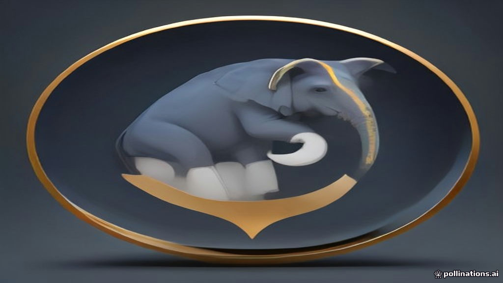

Personal-finance explainers, market briefs, F&O positioning and business stories — all in one place.
A Bengaluru couple's significant travel expenses highlight a common challenge: understanding where your money truly goes. Many high-income earners overlook de.
The National Pension System (NPS) is exploring increased allocation to alternative investments like AIFs, REITs, and InvITs. These instruments offer a pathway.
The recent US Midterm Election results, particularly the reported loss for Donald Trump, are expected to significantly influence India-US economic relations. .
The government has unveiled new digital tools to speed up big infrastructure projects across India. These tools, part of the PM Gati Shakti plan, help differe.
Mutual fund distributors are increasingly consolidating their multiple AMFI Registration Numbers (ARNs) into a single entity. This trend is driven by recent r.
Dhanteras is a traditional occasion for buying gold, but choosing the right investment vehicle is crucial for tax efficiency. Physical gold attracts 3% GST on.

Indian markets likely saw positive sentiment, driven by strong global cues and significant FII inflows. The biggest factor was the Democrat sweep in the US mi.
Global markets presented a mixed picture overnight, with US indices closing higher (Nasdaq leading) while Asian markets were mixed, influenced by US midterm e.
State Bank of India (SBI) reported a 14.28% year-on-year increase in net profit, reaching ₹23,038 crore for Q2 FY27. This headline profit growth was significa.
End-of-day reading of India's F&O open interest, PCR, max pain and FII positioning — explained simply.
India's factory activity, measured by the Manufacturing PMI, expanded in October 2026, though at a slightly slower pace than September. The Purchasing Manager.
SEBI has proposed scrapping the 12.5% Long Term Capital Gains (LTCG) tax currently levied on Foreign Portfolio Investors (FPIs). This move aims to simplify th.
Indian markets saw significant FII inflows today, continuing a recent trend of foreign buying. Falling crude oil prices globally provided a positive backdrop .
Global Tone:** Mixed cues from global markets; US tech indices closed lower while Dow gained, and Asian markets were largely subdued. **GIFT Nifty Bias:** Sig.
State Bank of India (SBI) is set to announce its Q2 FY27 results today, November 3, 2026, with market participants keenly awaiting the figures. Analysts proje.
End-of-day reading of India's F&O open interest, PCR, max pain and FII positioning — explained simply.
UPI Autopay lets you set up automatic payments for your regular expenses like bills and investments. It's like giving a digital standing instruction to your b.
Out of 60 IPOs that listed between 30 and 60 days ago, 25 companies are currently trading above their original IPO price. 34 companies are currently trading b.
For international holidays, strategically combine forex cards, zero-markup credit cards, and a small amount of local cash to minimise costs. Forex cards are e.
The Sukanya Samriddhi Yojana (SSY) offers a triple tax benefit, commonly known as the Exempt-Exempt-Exempt (EEE) status. Contributions made to an SSY account .
Indian markets surged strongly today, with benchmark indices gaining nearly 2%. Falling crude oil prices, robust corporate earnings, and positive foreign inve.
Global markets saw a significant tech sell-off in the US, while Asian markets were mixed. GIFT Nifty is signalling a strong gap-up open for the Indian benchma.
Infosys announced an interim dividend of ₹26 per equity share for FY27 on October 23. The record date for this interim dividend is set for tomorrow, November .
Bombay Coated and Special Steels Limited's Mainboard IPO closes today, November 2nd. Three SME IPOs are currently active: HGS (India) Limited, Maxwell Enginee.
End-of-day reading of India's F&O open interest, PCR, max pain and FII positioning — explained simply.
Block Deals** are very large, pre-arranged stock trades (at least ₹25 crore or 5 lakh shares) done in a special, separate window to avoid sudden price changes.
Global financial markets, particularly US equities, are showing resilience despite significant underlying economic concerns. Persistent inflation, exceeding c.
DSP Pension Fund, a relatively new entrant, manages investments under the National Pension System (NPS). It offers both Active and Auto Choice options for sub.
NTPC reported a robust 38.7% year-on-year profit growth, reaching ₹7,029.56 crore for Q2 FY27. Its subsidiary, NTPC Green Energy, also saw significant profit .
India's insurance regulator, IRDAI, wants to change how insurance agents and companies are paid. They've proposed bringing back 'hard caps' on commissions pai.
Regular mutual funds include a commission for distributors, leading to higher expense ratios. Direct mutual funds do not include distributor commissions, resu.
The Indian government is establishing a National Social Security Board for unorganised, gig, and platform workers. This board aims to design and recommend tar.
The Nasdaq 100 index recently entered its third technical correction of 2026, indicating a significant downturn in major US technology stocks. This market mov.
Sovereign Gold Bond (SGB) 2019-20 Series VI is currently open for premature redemption, offering significant returns to eligible investors. The Reserve Bank o.
Financial planning is comprehensive and extends far beyond just investing in mutual funds. Annually reviewing six key areas ensures your financial strategy re.
Indian markets likely faced headwinds today, influenced by negative global cues and sustained selling by Foreign Institutional Investors (FIIs). A significant.
Global markets presented a mixed picture, with US indices closing lower due to tech sector weakness, while Asian markets were split. GIFT Nifty indicates a fl.
Reliance Industries is set to announce its Q2 FY27 results today, October 30, 2026, with analysts anticipating a robust performance. The Oil-to-Chemicals (O2C.
End-of-day reading of India's F&O open interest, PCR, max pain and FII positioning — explained simply.
Missing a loan EMI payment by even a single day can attract late payment charges from your lender. However, a one-day delay typically does not immediately res.
Capital gains tax implications for an NRI selling property in India remain the same, irrespective of whether the buyer is a resident Indian or another NRI. Ta.
Indian equities witnessed a strong rally today, buoyed by positive global cues and robust institutional buying. The Federal Reserve's decision to hold interes.
Global markets ended mixed, with US and European indices closing positive, while some Asian markets saw declines. GIFT Nifty signals a strong positive opening.
A seemingly low Price-to-Earnings (P/E) ratio in bluechip stocks doesn't automatically mean they are a bargain. It's crucial to look beyond the headline P/E a.
End-of-day reading of India's F&O open interest, PCR, max pain and FII positioning — explained simply.
Reliance Industries is building a massive plant in Gujarat to produce 'carbon fibre'. Carbon fibre is a material that is incredibly strong, yet much lighter t.
Sovereign Gold Bond (SGB) Series 2020-21 I investors have seen their initial investment grow significantly upon maturity. The Reserve Bank of India (RBI) fixe.